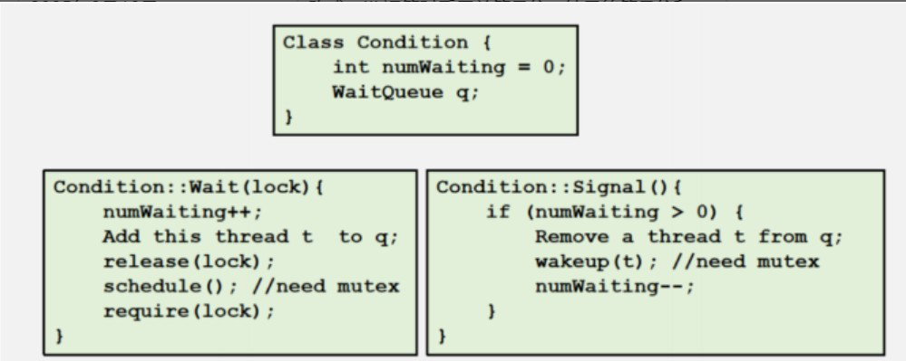
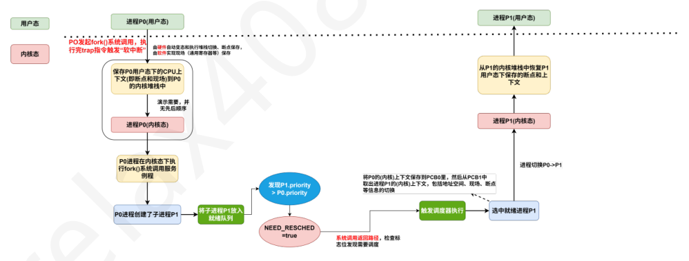
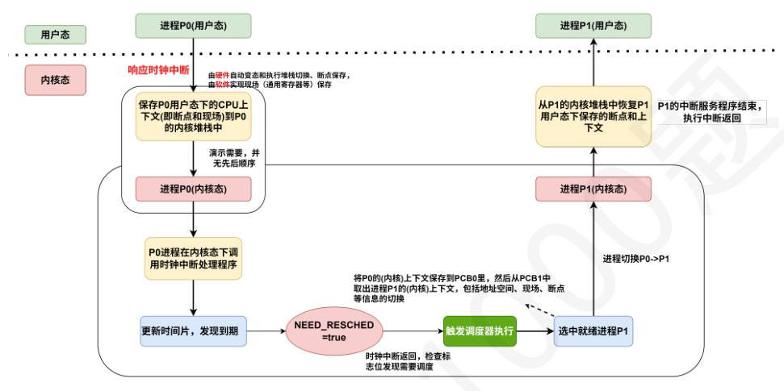

第 31 题
已知某操作系统中每创建一个用户线程都需要创建一个对应的内核线程，则在某进程下创建新的用户线程时，需要新分配的资源包括（）
A． 仅Ⅱ、Ⅲ B． Ⅰ、Ⅱ、Ⅲ C． Ⅱ、Ⅲ、Ⅳ D． Ⅰ、Ⅱ、Ⅲ、Ⅳ 答案与解析 答案：C
线程使用的是所属进程的地址空间，并不单独占有地址空间，因此不需要分配页表。本题中的线程属于一对一线程模型，一个用户线程必须要有一个内核线程来对应，因此既需要为用户线程分配堆栈，也需要为对应的内核线程分配堆栈，另外，一对一线程模型下的线程是内核可以感知的，因此需要为其配备对应的线程控制块TCB。
教材第 125 页 第 32 题
下列关于进程与线程的说法中，正确的有（ ）
A． 仅Ⅰ、Ⅱ B． 仅Ⅰ、Ⅳ C． Ⅱ、Ⅲ、Ⅳ D． Ⅰ、Ⅱ、Ⅲ、Ⅳ 答案与解析 答案：B
Ⅰ正确，在引入线程的操作系统中，进程是操作系统进行资源分配（如内存、文件句柄等）的基本单位。线程作为进程内的一个执行实体，自身拥有非常少的资源（如程序计数器、寄存器组、栈），它必须依赖于其所属的进程而存在，无法脱离进程独立运行。 Ⅱ错误，线程不是简单的程序段的划分。一个进程可以包含多个线程，这些线程共享进程的代码段 （程序段）和数据段。线程是进程中的一个执行流或执行单元。 Ⅲ错误，管道、共享存储、消息传递等机制通常是用于进程间通信（IPC）的。同一进程内的线程由于共享进程的地址空间（包括全局变量、堆内存等），它们之间的通信更为直接和高效，可以直接读写共享的内存数据，或者使用更为轻量级的同步机制（如互斥锁、条件变量）来协调。虽然理论上线程也可以使用某些IPC 机制，但这通常不是它们主要的或最高效的通信方式。 Ⅳ正确，同一进程中的所有线程共享该进程的整个地址空间，包括代码段、数据段和堆。但是，每个线程为了能够独立执行函数调用和存储局部变量，都拥有自己私有的栈空间。一个线程不能直接访问另一个线程的栈空间。
教材第 126 页 第 33 题
在现代多线程操作系统中，一个进程P 首先创建了一个主线程T0。线程T0 在执行过程中通过系统调用打开了一个网络套接字，并获得了对应的套接字描述符sock_fd。随后，线程T0 创建了两个新的子线程Ta 和Tb 来分别处理该套接字上的数据接收和发送。下列各项中，哪些是线程Ta 和Tb 可以共享的资源或信息？
A． 仅Ⅰ、Ⅲ B． 仅Ⅰ、Ⅳ C． 仅Ⅰ、Ⅲ、Ⅳ D． Ⅰ、Ⅱ、Ⅲ、Ⅳ 答案与解析 答案：A
在多线程环境下，同一进程内的所有线程共享该进程的大部分资源，但也拥有各自独立的一些资源。
教材第 126 页 第 34 题
PCB 指的是进程控制块，也称为进程描述符，是操作系统中用来管理进程的一种数据结构。 PCB 主要包括（ ） I．用户标识符II．进程优先级III．通用寄存器值IV．文件缓冲区V．代码段指针
A． I、II、III、IV B． I、II、IV、V C． I、III、IV、V D． I、II、III、V 答案与解析 答案：D
IV 错误，PCB 只有文件描述符，并没有文件缓冲区。PCB 包含：进程标识符、处理器状态信息（通用寄存器、PC、PSW、栈指针等）、进程调度信息（进程状态、进程优先级、阻塞原因）、进程控制信息（程序和数据的地址、信号量、标志、资源、指向所在队列下一个进程PCB的指针等）等。
教材第 126 页 第 35 题
进程控制块是进程的重要组成部分，下列内容中，PCB 中不应该包括（ ）
A． 仅Ⅳ B． 仅Ⅳ、Ⅵ C． Ⅱ、Ⅳ、Ⅵ D． Ⅱ、Ⅲ、Ⅳ、Ⅵ 答案与解析 答案：B
Ⅳ.互斥信号量（如mutex）通常属于系统资源，由操作系统维护。例如，当进程请求一个互斥锁时，操作系统会检查该信号量的状态。PCB 中可能包含进程当前持有的信号量或等待的信号量的引用，但信号量本身的数据结构（比如它的值、等待队列等）并不在PCB 中。Ⅵ.进程执行的代码是代码段，和PCB一样是进程的组成部分，并不会被包含在PCB中。(进程的代码通常存储在内存或磁盘中，PCB只保存代码段的起始地址，而非代码本身).其余均应包含在PCB 中，故选B。
教材第 126 页 第 36 题
下列关于PCB 的组织方式的说法中，错误的是（ ）
A． 线性方式将所有PCB 存放在一个连续的内存区域（如数组）中，其优点是实现简单，但在需要频繁插入和删除PCB 时效率较低。 B． 链接方式通过指针将PCB 连接起来，可以方便地根据进程状态（如就绪、阻塞）将PCB 组织成不同的队列，适用于进程状态频繁变化的系统。 C． 索引方式为所有PCB 建立一个统一的索引表，通过进程ID 直接计算索引即可快速定位PCB，因此查找任何PCB 的效率都非常高且固定。 D． 链接方式相比线性方式，在创建和撤销进程时，对PCB 的插入和删除操作通常更灵活高效，因为不需要移动大量数据。 答案与解析 答案：C
本题命制依据为汤小丹计算机操作系统慕课版2.2.4 进程管理中的数据结构中4.PCB 的组织方式。 A 正确，线性方式（如数组）确实实现简单，可以通过下标直接访问。但如果要在中间插入或删除PCB，可能需要移动后续的PCB，导致效率较低。 B 正确，链接方式使用指针连接PCB，可以灵活地形成各种队列（如就绪队列、不同事件的阻塞队列）。当进程状态改变时，只需修改指针即可将其从一个队列移到另一个队列，非常适合进程状态频繁变化的场景。 C 错误，索引方式通常是为不同状态的进程分别建立索引表（如就绪索引表、阻塞索引表等），而不是一个统一的索引表让所有PCB 都通过进程ID 直接计算。 D正确，在链接方式中，插入或删除一个PCB 通常只需要修改相邻节点的指针，时间复杂度较低。而在线性方式（如数组）中，如果在中间位置插入或删除，可能需要移动大量后续元素。
教材第 127 页 第 37 题
下列关于线程控制块（TCB）的叙述中，哪一项是不正确的？
A． TCB 中包含了线程的唯一标识符、程序计数器和一组寄存器的内容。 B． 同一进程中的所有线程共享该进程的地址空间，因此TCB 中不包含指向该线程私有堆栈的指针。 C． 线程的状态（如就绪、运行、阻塞）及其调度优先级通常记录在TCB 中。 D． 内核级线程的TCB 由操作系统内核创建和管理，而用户级线程的TCB 则由用户空间的线程库创建和管理。 答案与解析 答案：B
A 正确，为了唯一地标识和管理线程，TCB 中必然会包含线程的唯一标识符。为了支持线程的独立调度和执行，每个线程必须有自己独立的程序计数器（PC）来记录下一条要执行的指令地址，以及一组寄存器（如通用寄存器、状态寄存器等）来保存其运行时的上下文。 B 错误，虽然同一进程中的线程共享进程的地址空间（如代码段、数据段、堆），但每个线程为了能够独立执行函数调用、存储局部变量和返回地址，必须拥有自己私有的栈空间。因此，TCB中需要包含一个指向该线程私有堆栈的指针（栈指针）。 C 正确，与进程类似，线程在其生命周期中也会经历不同的状态（如执行态、就绪态、阻塞态）。这些状态信息以及用于调度的优先级等，都是管理和调度线程所必需的，因此通常会记录在TCB 中。 D 正确，内核级线程（KST）是由操作系统内核直接支持和管理的，因此其TCB 也存放在内核空间，由内核负责维护。用户级线程（ULT）的管理完全在用户空间进行，由用户空间的线程库负责其TCB 的创建、调度和管理，内核对此是不可见的。
教材第 127 页 第 38 题
下列关于共享内存通信的叙述中，错误的是（ ）
A． 共享内存原理就是需要通信的进程分别拿出一块虚拟地址空间映射到相同的物理内存中 B． 共享内存位于进程的用户空间，可以直接读写这片内存区域 C． 需要通信的进程可以直接在用户态下创建共享内存 D． 共享内存（属于临界资源）本身不提供同步，需结合信号量、互斥锁等机制避免竞态条件。 答案与解析 答案：C
创建共享内存需要通过系统调用实现，因为需要先进入内核态，内核在物理内存中分配一块连续区域，指定共享内存的访问权限（如读写权限）和大小；然后进程再通过系统调用将共享内存映射到自己的虚拟地址空间。(在虚拟页式内存管理的操作系统中，内核修改进程的页表，将指定的虚拟地址范围映射到共享内存的物理页框。多个进程的虚拟地址可以不同，但最终指向同一物理内存，如图所示)
教材第 127 页 第 39 题
在段页式存储管理系统中，进程R 和S 共享数据段data，若进程R 和S 都想访问该data 段里的某个内存单元x，若x 在R 和S 的段表中的段号分别为p1 和p2，x 所在页对应的页框号分别为f1 和f2，则下列叙述中，正确的是（ ）。
A． p1 和p2 一定相等，f1 和f2 一定相等 B． p1 和p2 一定相等，f1 和f2 不一定相等 C． p1 和p2 不一定相等，f1 和f2 一定相等 D． p1 和p2 不一定相等，f1 和f2 不一定相等 答案与解析 答案：C
如图
教材第 127 页 第 40 题
下列关于进程虚拟地址空间的说法中，错误的是（ ）
A． 进程虚拟地址空间分为内核空间和用户空间，当CPU 处于用户态时只能访问用户空间，处于内核态时可以访问内核空间和用户空间； B． 每个进程的虚拟地址空间中，内核空间部分映射到相同的物理内存区域，即操作系统的代码和全局数据。 C． 每个进程都共享内核空间的同一份内核栈，用于保存内核处理中断/异常（系统调用）时的局部变量，返回地址等信息 D． 当进程想要访问内核空间时，可以通过中断/异常（系统调用）进入内核态 答案与解析 答案：C
B.补充：无论哪个进程切换到内核态，访问的内核代码和全局数据（如中断向量表、系统调用表、设备驱动、内存管理结构等）都是同一份物理内存的映射； C：虽然说内核空间是共享的，但是每个进程在内核态执行时需要使用独立的内核栈，用于保存进程处于内核态时内核函数调用的返回地址、局部变量和中断上下文(进程响应中断/异常时，会把用户态下的断点/现场信息压入内核栈)，每个进程的内核栈指针位于该进程的PCB 中；
教材第 127 页 第 41 题
下列关于管道（Pipe）通信的叙述中，错误的是（ ）
A． 管道通常用于具有亲缘关系的进程（如父子进程）之间进行单向数据流通信。 B． 管道的实质是在内存中开辟的一个固定大小的缓冲区，其容量通常有限，并非无限大。 C． 当写进程向已满的管道中写入数据时，或者读进程从空管道中读取数据时，对应的进程将会被阻塞。 D． 管道位于进程的用户空间之中，可直接在用户态下读管道； 答案与解析 答案：D
下面给出管道(Pipe)通信的可能考察的所有考点：注意与PV 信号量中的管程，I/O 方式中的通道做区分管道实际上是一种固定大小的缓冲区，管道对于管道两端的进程而言，就是一个文件，但它不是普通的文件，它不属于某种文件系统，而是自立门户，单独构成一种文件系统，并且只存在于内存中。普通管道只允许单向通信，数据只能往一个方向流动，要实现双向数据传输，就需要定义两个方向相反的管道。管道的容量大小通常为内存上的一页，它的大小不受磁盘容量大小的限制。可有多个读写进程对管道进行读写，但需要互斥访问，当管道满时，进程在写管道会被阻塞，而当管道空时，进程在读管道会被阻塞。管道一般用于亲缘关系的进程通信，匿名管道只能由创建它的进程（以及它的子进程）访问，而命名管道可以由任何可以访问对应文件的进程访问。管道允许两个进程按照生产者-消费者的方式进行通信。管道中的数据只能读一次，做一次读操作之后数据也就没有了（读数据相当于出队列）。 D 错误，管道文件位于内核区中，读写操作需要通过系统调用在内核态下读或写；
教材第 128 页 第 42 题
已按勘误修正
一个管程中包含条件变量x，下面关于x 的说法，错误的是（ ）
A． x.signal（ ）操作不一定会唤醒一个进程 B． x.wait（ ）操作不一定会阻塞一个进程 C． x 中通常拥有一个特定的阻塞队列 D． 管程中定义x 时，不需要对其进行初始化操作 答案与解析 答案：B
管程中条件变量的定义如下图所示，可以看出，条件变量的wait操作会无条件阻塞进程，而signal操作则只在阻塞队列中存在进程的时候才会唤醒一个进程，因此A、C正确，B错误。而条件变量代表某一种条件（即阻塞或者唤醒进程的事件），并不存在需要赋值的部分，而是通过管程内部的阻塞队列来完成判断的，因此D正确。
勘误修正： 解析配图已按勘误补入。

勘误：解析配图已按勘误补入。
教材第 128 页 第 43 题
两个进程协作完成一个任务，不能实现数据传递的手段是（ ）
A． 程序段的全局变量 B． 共享数据结构 C． 共享存储区 D． 管道机制 答案与解析 答案：A
进程的地址空间是相互隔离的，其他进程无法直接访问到该进程的全局变量。
教材第 128 页 第 44 题
下列关于管道（Pipe）通信的叙述中，正确的是（ ）
A． 管道与共享内存这两种IPC 机制都自己实现了同步/互斥机制，使用的时候用户不需要考虑用信号量/互斥锁等机制保证同步互斥。 B． 管道是存放在磁盘中的一种“特殊的文件”，和文件一样，支持定位到某个具体位置进行读或写操作 C． 在操作系统中，管道这个内核数据结构包含有互斥锁、两个等待队列、读/写指针等元素 D． 对管道的读操作需要互斥进行，因为读完数据就消失了，因此同一时刻只能有一个读进程对管道执行读操作；但是对管道进行写操作不需要互斥进行，支持多个写进程同时写管道。 答案与解析 答案：C
A.错误，管道自身以及通过mutx 互斥锁和两个等待队列实现了同步与互斥，但是共享内存自身没有同步互斥机制，一般需要和信号量一同使用； B.错误，管道在内存之中，管道只能读head(读指针)指向的数据，只能在tail（写指针）指向的区域写入数据（队尾写入，队头读出），不支持lseek之类的文件定位操作。 C.正确，管道（Pipe）的同步与互斥机制就是通过mutex互斥锁，等待队列（rd_wait和wr_wait）实现，读写操作需要用到读写指针（也可以理解为循环队列的队头、队尾指针）； D.错误，对管道的读写操作都需要互斥进行，同一时刻，管道只允许一个读进程对管道执行读操作或一个写进程对管道执行写操作；
教材第 128 页 第 45 题
下列关于管道（Pipe）通信的叙述中，正确的是（ ）
A． 在利用管道文件通信时，可以使用操作系统为文件提供的一套系统调用接口，如open（ ）、 write（）、read（）、close（ ）等 B． 当所有引用管道的文件描述符都被关闭后，管道内未被读取完的数据会被持久化到磁盘之中； C． 父进程在创建了管道之后又创建了两个子进程，子进程之间利用管道进行通信，当父进程被撤销时，这两个子进程之间的管道也被内核撤销； D． 管道通信是以消息为单位进行写入和读出的； 答案与解析 答案：A
B.错误，当所有引用管道的文件描述符都被关闭后，内核直接回收管道的缓冲区资源； C.错误，在此情景之下，持有管道读/写端文件描述符的进程数量都不为0，只有当readers和writers均为0时，内核才会销毁管道并释放其缓冲区内存D.错误，管道通信是以字符流为单位进行写入和读出的；
教材第 128 页 第 46 题
管道通信是以（ ）进行写入和读出的。
A． 消息为单位 B． 自然字符流 C． 文件 D． 报文 答案与解析 答案：B
管道是一种特殊的文件，读写进程以字符流形式进行读出和写入，因此B 选项正确。
教材第 128 页 第 47 题
对于管道（pipe）的说法，错误的是（ ）
A． 管道中的一个数据只能被读取一次 B． 管道虽然是一种特殊的文件，但是并没有对应的磁盘实体 C． 读管道和写管道都可能造成进程的阻塞 D． 单一管道即可实现进程间的双向通信 答案与解析 答案：D
管道的读端和写端会被分配不同的文件描述符来分别进行读和写操作，要实现双向通信至少需要开辟两个管道，D错误。管道中的数据被读后（被消费）便会失效，读指针后移，A正确。管道是一种特殊文件，本质上是存在于内核空间中的环形数组，因此没有磁盘实体，B正确。当管道空时，读管道会导致进程阻塞；管道满时，写管道会导致管道阻塞，C正确。因此选D。
教材第 128 页 第 48 题
信号（Signal）是UNIX 及类UNIX 系统中一种重要的异步进程间通信方式。下列关于信号机制的叙述中，错误的是（）
A． 信号可以由一个进程发送给另一个进程，也可以由内核发送给某个进程，甚至进程也可以给自身发信号。 B． 进程接收到信号后，可以忽略该信号、执行系统默认操作或执行用户自定义的处理函数。 C． 信号是一种轻量级的通信方式，适合用于传递大量复杂的数据结构。 D． 某些特定信号具有特殊含义，其默认行为不能被用户进程捕获或忽略。 答案与解析 答案：C
A 正确，进程可以使用系统调用（如kill()）向其他有权限接收的进程发送信号，也可以给自身发信号。。同时，内核也会在某些事件发生时（如硬件错误、非法指令、定时器超时、子进程终止等）向特定进程发送信号。 B 正确，对于大多数信号，进程可以选择三种处理方式： •忽略信号：进程不响应该信号，如：Linux 中的SIGWINGH 信号。 • 执行系统默认操作：每种信号都有一个系统预设的默认处理动作，如终止进程、忽略信号、暂停进程等。 •执行用户自定义的处理函数：进程可以注册一个信号处理函数（signal handler），当接收到特定信号时，执行该用户定义的函数。 C 错误，信号是一种异步通知机制，它本身并不携带大量数据。它主要用于通知接收进程发生了某个事件。进程可以通过信号处理函数来响应这个通知，但信号本身不适合用来直接传递大量或复杂的数据结构。传递大量数据通常需要借助管道、共享内存、消息队列等其他IPC 机制。 D 正确，操作系统定义了一些具有特殊用途的信号，它们的行为是固定的，不能被用户进程通过设置信号处理函数来改变（捕获）或忽略。如SIGKILL，SIGSTOP。
教材第 129 页 第 49 题
使用共享文件进行通信的方式属于（ ）通信。
A． 共享存储 B． 信号量 C． 消息缓冲 D． 管道 答案与解析 答案：D
利用共享文件进行的进程通信机制称为管道。管道是一种文件，是服务于管道通信的特殊文件，而管道通信是一种通信方式，这种通信方式比较特殊，一般是半双工通信方式，数据只能单向流动，数据传递的方式是字符流形式。故答案为选项D。考生要注意区分共享存储与管道通信的区别。
教材第 129 页 第 50 题
在一个操作系统中，有3 个进程P1，P2 和P3 需要进行进程间通信。P1 需要将数据传递给P2，然后P2 再将数据传递给P3。以下哪种进程通信机制最适合满足这个需求?（ ）
A． 管道 B． 消息队列 C． 共享内存 D． 信号量 答案与解析 答案：A
管道是一种半双工的进程通信机制，适用于父子进程或具有亲缘关系的进程间通信。在这种情况下，P1可以将数据写入管道，P2从管道中读取数据，并将数据再次写入管道，最后P3从管道中读取数据。消息队列适用于进程间传递消息的场景，但不适合多个进程之间的连续数据传递。共享内存允许多个进程访问同一块内存区域，但它需要额外的同步机制来确保数据的正确性，并且不适合这种连续的进程链式通信。信号量用于进程间同步和互斥，但不能直接用于进程间数据传递。因此，选项A 是最适合这个需求的进程通信机制。
教材第 129 页 第 51 题
已按勘误修正
假设一个高性能计算服务器上运行着一个多进程应用，其工作模式如下：
A． I、II B． I、III C． II、III D． II、IV 答案与解析 答案：D
Ⅰ错误。管道分为匿名管道和命名管道，其中匿名管道仅能用于具有亲缘关系的进程之间（如父子进程）的通信。步骤①明确指出主进程P0 与P1 是“无亲缘关系”的，因此无法使用匿名管道。对于无亲缘关系的进程间通信，应使用命名管道、消息队列、共享内存等方式。 Ⅱ正确。步骤②涉及将大型数据集（>1GB）分发给多个子进程进行频繁、快速地读取。共享内存是所有进程通信方式中最快的一种，因为它允许多个进程直接访问同一块内存区域，避免了在内核和用户空间之间以及进程之间进行数据复制的开销。对于大数据量和高频访问的场景，共享内存的效率远高于需要多次数据拷贝的管道或消息队列。 Ⅲ错误。步骤③是子进程向主进程发送一个“简短的完成信息”。虽然消息传递（消息队列）可以完成此任务，但它涉及系统调用和数据拷贝，开销相对较大。对于这种仅需传递少量信息的通知类场景，效率更高的方式是信号。 Ⅳ正确，步骤④描述的是一个紧急、异步的异常通知，要求主进程“立刻中断当前工作并进行处理”。这正是信号机制的核心特点。信号是一种异步通信机制，用于通知接收进程某个事件已经发生，它会中断目标进程的正常执行流程，强制其处理信号。其开销非常小，传递信息快捷，非常适合用于处理紧急或异常事件。本题Ⅱ、Ⅳ正确，Ⅰ、Ⅲ错误，选择D 选项。
勘误：原书注明：本题题目不严谨，A、C、D 均可成立，此题可以不做。
教材第 129 页 第 52 题
下列关于进程通信的叙述中，正确的有（ ）
A． 仅Ⅰ、Ⅱ、Ⅲ B． 仅Ⅱ、Ⅲ、Ⅳ C． 仅Ⅰ、Ⅲ、Ⅳ D． Ⅰ、Ⅱ、Ⅲ、Ⅳ 答案与解析 答案：D
Ⅰ正确，共享存储、信息传递、通道和信号都是高级通信方式，PV操作(信号量)、管程也可用于进程通信，属于低级通信方式。 Ⅱ正确，共享内存方式允许多个进程直接访问同一块内存区域。一旦共享内存区域映射到进程的地址空间，进程就可以像访问自己的私有内存一样读写这块区域，无需操作系统内核的介入来进行数据复制。因此，与其他需要内核参与数据拷贝的通信方式（如管道、消息队列）相比，共享内存通常是速度最快的进程间通信方式。 Ⅲ正确，消息传递机制中，进程以格式化的消息为单位，通过操作系统提供的发送和接收原语进行数据交换。这种方式隐藏了通信实现的细节，使用方便，并且能够很好地支持分布式系统和计算机网络环境下的通信，因此成为当前应用最为广泛的一类进程通信机制。 Ⅳ正确，信号（Signal）是一种异步的通知机制，用于通知接收进程发生了某个事件。当一个进程接收到信号时，它的正常执行流程会被打断，转而去执行相应的信号处理程序（如果已注册），或者执行系统默认的操作。这种打断当前执行流并转去执行特定处理程序的过程，与中断（特别是软件中断或陷入）的机制非常相似。因此，信号通信可以被视为一种软件层面的中断或异步事件通知。
教材第 129 页 第 53 题
下列有关基于时间片的进程调度的叙述中，错误的是（ ）
A． 时间片的大小固定不变，一旦设定，在操作系统运行期间不能动态调整。 B． 当一个进程的时间片用完，若该进程尚未完成，它会从执行态转换为就绪态，并排到就绪队列的末尾。 C． 时钟中断是实现时间片轮转调度的关键机制，用于在时间片结束时剥夺当前进程的CPU使用权。 D． 时间片设置过长，会导致时间片轮转算法退化为先来先服务算法，不利于短作业和交互式用户的及时响应。 答案与解析 答案：A
A 错误，虽然在基本的时间片轮转算法中，时间片大小通常是预设的，但在一些更高级的调度算法（如多级反馈队列调度）中，不同队列的进程可以拥有不同的时间片大小，并且系统也可能根据运行情况动态调整时间片的大小以优化性能。因此，时间片的大小并非绝对固定且不可调整。 B 正确，这是时间片轮转调度算法的基本工作方式。当进程用完其时间片后，如果它还需要继续执行，调度程序会将其置为就绪态，并将其移至就绪队列的尾部，等待下一轮调度。 C 正确，操作系统通过设置定时器（时钟部件）在每个时间片结束时产生一个时钟中断。CPU 响应这个中断后，会进入内核态，执行调度程序，从而剥夺当前进程的CPU，并分配给就绪队列中的下一个进程。 D 正确，如果时间片设置得非常长，以至于大多数进程都能在一个时间片内完成，那么进程调度的行为就近似于先来先服务（FCFS）算法。这会使得短作业和需要快速响应的交互式用户得不到及时的处理，降低了分时系统的交互性。
教材第 130 页 第 54 题
非抢占调度方式下，（ ）可能会引起进程的调度
A． 一个新进程被创建 B． 进程发起I/O C． 磁盘的DMA 传输完成 D． 有新的I/O 设备就绪 答案与解析 答案：B
在采用非抢占调度方式时，一旦把处理机分配给某进程，就会一直让它运行下去，而决不会因为时钟中断或其他原因去抢占该进程的处理机，直至该进程完成或发生某事件而被阻塞时，才会把分配给该进程的处理机分配给其他进程。在采用非抢占调度方式时，可能会引起进程调度的因素可归结为：
教材第 130 页 第 55 题
非抢占调度方式下，若不考虑进程执行yield 系统调用主动释放处理机资源，那么下面哪种进程状态转换是不可能发生的?
A． 运行态→阻塞态 B． 运行态→就绪态 C． 运行态→退出态 D． 就绪态→运行态 答案与解析 答案：B
非抢占式调度方式下，运行态上的进程要么一口气完成，要么因为某些事件到阻塞态，不可能到就绪态。
教材第 130 页 第 56 题
下列关于处理机调度目标的说法中，错误的是（ ）
A． 批处理操作系统的主要目标是提高系统吞吐量和资源利用率，同时尽可能缩短作业的平均周转时间。 B． 分时操作系统的核心目标是保证用户请求的快速响应和提供良好的人机交互体验，公平性也是重要考量。 C． 实时操作系统（硬实时）的首要目标是确保任务在严格的截止时间内完成，保证系统的可预测性。 D． 不同类型的操作系统因其应用场景和设计目标不同，其处理器调度算法所侧重的目标也有所差异。这些目标之间可以相互协调，不存在矛盾。 答案与解析 答案：D
A 正确，批处理系统的设计初衷就是高效地完成大量计算任务，因此关注的是整个系统的效率（吞吐量、资源利用率）以及作业从提交到完成的整体时间（周转时间）。 B 正确，分时系统允许多个用户通过终端与计算机交互，因此快速响应用户输入、提供流畅的交互体验是其核心调度目标。同时，为保证每个用户都能获得合理的CPU 时间，公平性也是一个重要因素。 C 正确，硬实时系统通常应用于工业控制、航空航天等对时间要求极为严格的领域。其调度算法的首要任务是保证所有硬实时任务在其规定的截止时间（deadline）内完成，系统的可预测性和高可靠性是关键，有时甚至可以牺牲部分资源利用率来确保这些目标的实现。 D 错误，不同类型操作系统的处理器调度目标确实存在差异，这些目标之间相互矛盾，需要在设计时进行权衡和折中。
教材第 130 页 第 57 题
设计调度算法时，应该考虑的指标包括（ ）
A． 仅Ⅰ、Ⅱ B． 仅Ⅰ、Ⅱ、Ⅳ C． 仅Ⅱ、Ⅲ、Ⅳ D． Ⅰ、Ⅱ、Ⅲ、Ⅳ 答案与解析 答案：B
在设计处理机调度算法时，需要综合考虑多个目标，以期望获得良好的系统性能和用户体验，包括公平性，资源利用率，平均周转时间等。但不应包括互斥性。互斥性不属于调度算法直接考虑的性能指标。互斥性是指当多个进程访问共享资源（临界资源）时，确保在任意时刻只有一个进程能访问该资源。这是通过进程同步机制（如信号量、互斥锁、管程等）来实现的，而不是由处理器调度算法本身来直接保证或作为其设计目标。调度算法关注的是如何分配CPU 时间，而互斥机制关注的是如何安全地共享其他资源。
教材第 130 页 第 58 题
若某单处理器多进程系统中有多个就绪态进程，下列选项中，进程调度程序执行的时机有（ ）
A． Ⅰ、Ⅲ、Ⅵ B． Ⅰ、Ⅱ、Ⅲ、Ⅴ、Ⅵ C． Ⅰ、Ⅲ、Ⅳ、Ⅴ、Ⅵ D． Ⅰ、Ⅱ、Ⅲ、Ⅳ、Ⅴ、Ⅵ 答案与解析 答案：B
抢占式调度中，在进程的PCB 中，为进程设置一个标志位，例如linux 中PCB 里的TIF_NEED_RESCHED（记作NEED_RESCHED）标志位，其含义为“需要重新调度”，当某个进程的NEED_RESCHED标志被设置时，表示内核需要尽快触发调度器scheduler，重新选择下一个要运行的任务。


教材第 130 页 第 59 题
下列关于闲逛进程的说法中，错误的是（ ）
A． 闲逛进程的优先级通常设置为最低，一旦有其他进程需要CPU 资源，闲逛进程会立即让出CPU，让其他进程执行。 B． 大多数情况下，闲逛进程仅执行一个空循环，不执行任何实际操作。 C． 闲逛进程一般来说运行在用户态下； D． 闲逛进程的进程转换只有运行态→就绪态和就绪态→运行态 答案与解析 答案：C
闲逛进程不需要CPU 以外的其他资源，且只运行在内核态下；
教材第 131 页 第 60 题
高响应比优先的进程调度算法综合考虑了进程的等待时间和计算时间，响应比的定义是（ ）
A． 进程周转时间与等待时间之比 B． 进程周转时间与要求服务时间之比 C． 进程等待时间与要求服务时间之比 D． 要求服务时间与等待时间之比 答案与解析 答案：B
响应比=（等待时间+要求服务时间）/要求服务时间。其中，等待时间+要求服务时间=进程周转时间=作业完成时间-作业提交时间。
教材第 131 页